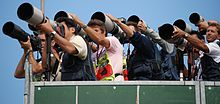

MEDIA COVERAGE
Formula One can be seen live or tape delayed in almost every country and territory around the world and attracts one of the largest global television audiences. The 2008 season attracted a global audience of 600 million people per race.[111] It is a massive television event; the cumulative television audience was calculated to be 54 billion for the 2001 season, broadcast to two hundred countries.[112]
During the early 2000s, Formula One Group created a number of trademarks, an official logo, and an official website for the sport in an attempt to give it a corporate identity. Ecclestone experimented with a digital television package (known colloquially as Bernievision) which was launched at the 1996 German Grand Prix in cooperation with German digital television service "DF1", 30 years after the first GP colour TV broadcast, the 1967 German Grand Prix. This service offered the viewer several simultaneous feeds (such as super signal, on board, top of field, backfield, highlights, pit lane, timing) which were produced with cameras, technical equipment and staff different from those used for the conventional coverage. It was introduced in many countries over the years, but was shut down after the 2002 season for financial reasons.
TV stations all take what is known as the "World Feed", either produced by the FOM (Formula One Management) or occasionally, the "host broadcaster". The only station that originally differed from this was "Premiere"—a German channel which offers all sessions live and interactive, with features such as the onboard channel. This service was more widely available around Europe until the end of 2002, when the cost of a whole different feed for the digital interactive services was thought too much. This was in large part because of the failure of the "F1 Digital +" Channel launched through Sky in the United Kingdom. Prices were too high for viewers, considering they could watch both the qualifying and the races themselves free on ITV.

However, upon the commencement of its coverage for the 2009 season, the BBC reintroduced complementary features such as the "red button" in-car camera angles, multiple soundtracks (broadcast commentary, CBBC commentary for children, or ambient sound only) and a rolling highlights package. Different combinations of these features are available across the various digital platforms (Freeview, Freesat, Sky, Virgin Media cable and the BBC F1 web site) prior to, during, and after the race weekend. Not all services are available across all the various platforms due to technical constraints. The BBC also broadcasts a post-race programme called "F1 Forum" on the digital terrestrial platforms' "red button" interactive services.
An announcement made on 12 January 2011, on the official Formula 1 website, announced that F1 would adopt the HD format for the 2011 season offering a world feed at a data rate of 42 Megabits/second (MPEG-2).[113] The BBC subsequently announced later that day that their 2011 F1 coverage would be broadcast in HD[114] which has been made immediately possible due to SIS LIVE, the provider of the BBC's F1 outside broadcast coverage, having already upgraded their technical facilities to HD as of the 2010 Belgian Grand Prix.[115]
It was announced on 29 July 2011 that Sky Sports and the BBC would team up to show the races in F1 in 2012. In March 2012, Sky launched a channel dedicated to F1, with an HD counterpart. Sky Sports F1 covered all races live without commercial interruption as well as live practice and qualifying sessions, along with F1 programming, including interviews, archive action and magazine shows.[116] The deal secures Formula 1 on Sky up to 2018.[117] The BBC in 2012 featured live coverage of half of the races in the season: China, Spain, Monaco, Europe, Britain, Belgium, Singapore, Korea, Abu Dhabi, and Brazil.[118] They also showed live coverage of practice and qualifying sessions from those races.[119] For the races that the BBC don't show live, "extended highlights" of the race were available a few hours after it the live broadcast.[120]
Formula One has an extensive web following, with most major TV companies covering it such as the BBC. The official Formula One website has a live timing Java applet that can be used during the race to keep up with the leaderboard in real time. Recently an official application has been made available in the iTunes App Store that allows iPhone / iPod Touch users to see a real time feed of driver positions,[121] timing and commentary. The same application is now available for Android phones and tablets from 2011.
SOURCE:
BACK